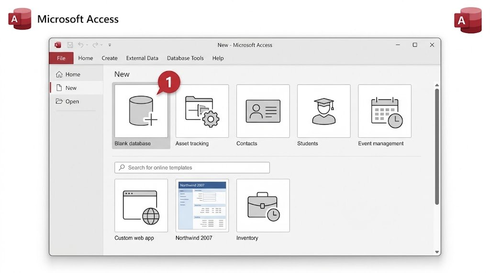

تخيّل وجود مكتبة تحتوي آلاف الكتب، وفي كل مرة تريد معرفة "ما هي الكتب المستعارة حاليًا؟" يتوجّب عليك البحث يدويًا بين أوراق متناثرة. قاعدة البيانات هي طريقة منظّمة لتخزين المعلومات، بحيث يمكن البحث فيها وتصفيتها وربطها ببعضها البعض بسهولة وسرعة، دون فوضى.
يُعَدّ Microsoft Access برنامجًا يساعدك على بناء قاعدة بيانات كاملة دون الحاجة إلى كتابة أكواد برمجية معقدة. يعتمد على أربعة عناصر أساسية تعمل معًا: الجداول لتخزين البيانات، والاستعلامات لاستخراج معلومات محددة، والنماذج لإدخال البيانات بسهولة، والتقارير لعرض النتائج وطباعتها.

في الدروس القادمة، سنبني معًا قاعدة بيانات مكتبة فعلية، تحتوي على جدول للكتب وجدول للمستعيرين، ونربطهما ببعضهما، ثم نستخرج منهما استعلامات ونماذج وتقارير حقيقية.
هل تعلم؟
يُخزّن Access كامل قاعدة البيانات (الجداول، النماذج، التقارير...) داخل ملف واحد بامتداد .accdb، على عكس إكسل الذي يفصل كل ورقة عمل على حدة.
جرّب بنفسك
افتح برنامج Microsoft Access على جهازك، وتصفّح الواجهة الرئيسية. حاول أن تجد بنفسك تبويب "Create" الذي سنستخدمه في الدرس القادم لإنشاء أول قاعدة بيانات.
تلميح
يقع تبويب "Create" في شريط الأدوات العلوي (Ribbon)، بجانب تبويب "Home" مباشرة.